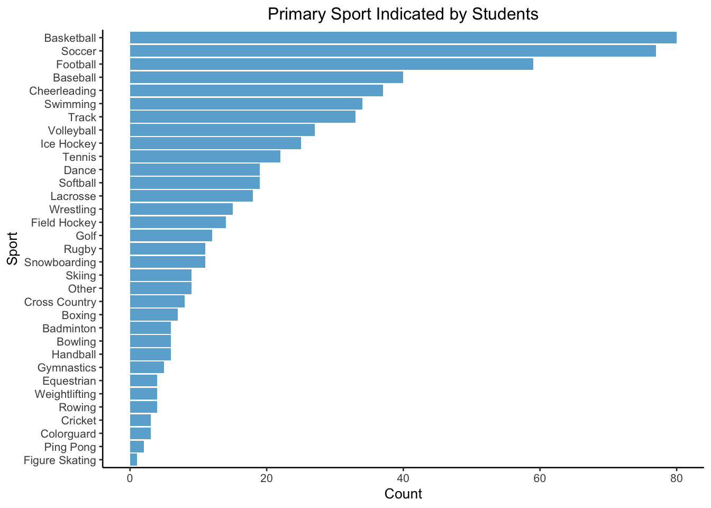

Chapter 5 Results
5.1 Who took this survey?

Students who took part in this survey are within the age range of College Students as is expected. Some older students who participated in the study may include graduate students and some students who started college later than their peers or are taking extra time to finish. The breakdown between men and women is fairly evenly split, which is nice to see. The majority of respondents were white, which may lead to some biases in responses, particularly because mental health is known to have strong correlations with economic status and race. However, when you consider this is a survey given to students at Northeastern University, a private university in Boston, in 2006 it could be feasible that this breakdown represented the student population at that time, especially for athletes and those interested in sports. Lastly, we see from the demographics that we have a majority of underclassmen who took the survey (Freshman, Sophomore) which may also lead to biased results as the stresses of college, adult life, and a persons relationship to sport likely change between Freshman and Senior years of college.
Now that we know a little bit about the demographics of respondents, lets take a look at what sports they participated in:

Students selected a wide variety of sports as their Primary Sport. Each student was only able to elect one sport, however we are not displaying those who did not select any sport as we will only be looking at students with a primary sport. We can see that some sports had relatively low response rates and because of that we will exclude all Sports below (and including) ‘Other’ on this list, that is sports with less than 9 responses. Although Skiing has 9 responses, we have kept it in the analysis because of its close proximity to Snowboarding.
We see that the most popular sports are Basketball, Soccer, Football and Baseball. This makes sense for an American University!
5.2 Investigating Mental Health (MH) Responses
Our primary questions of interest surround how aspects of sport, performance, and team correlate with Mental Health Indicators. As part of the survey given to students, there were 10 questions that were meant to assess each students mental health. Students were asked to respond to the following prompt:
"Below is a list of some of the ways you may have felt or behaved recently. Please indicate how often you have felt this way during the past week."

In this plot we can view the proportion of responses from all students across all the mental health questions from the survey. We see that many of the negative feelings, like Depressed or Fearful, have “Rarely or none of the time” as the most frequent answer provided. Whereas, positive outlooks, like Happy or Hopeful about future, have relatively low “Rarely or none of the time”, but most of the responses lie in “Occasionally”. Happy and Hopeful are also the two questions that the largest proportions of “All the time” across all questions.
We also attempted faceting and filtering by different sport types and gender, but did not see significant differences to warrant including it here. This showed us that on a macro scale and from a proportion perspective, students answered these questions relatively similarly.
Note about plot: We recognize that part of the legend got cut off in the rendered book, however in the .Rmd file is shows up fully, we are unsure why this is the case. The full text for legend box 4 is: “All of the time”.
5.3 Investigating Sport Motivation, Perspectives on Success, Behavior Patterns, and Mental Health for Athletes
In effort to assess how factors related to sport and sport performance are related to an athletes mental health, we created a scoring formula for all students based on their responses to the survey questions:
Mental Health Score – Mental Health questions were posed in the following manner:
"Below is a list of some of the ways you may have felt or behaved recently. Please indicate how often you have felt this way during the past week."
Based on the feeling, we assigned scores that were positive to indicate positive mental health outlook versus negative scores to indicate a negative outlook on mental health. For example, if a respondent answered “I was happy” with “All of the time” they would get +2 points, versus a response of “Rarely or None of the Time” would get -2 points. In summary, a high mental health score denotes a positive mental health outlook.
Internal Motivation Score – The Motivation Score comes from questions surrounding reasons for participating in a student’s sport of choice:
"People have many different reasons for participating in sports. Below are listed some of those possible reasons. How important is each of these reasons for you? I participate in sports because . . ."
Students only answered these questions if they participated in at least one season of their sport since the beginning of High School. If a student did not respond to these questions, they were removed from this particular analysis. The motivation score identified questions that highlighted questions that focused on motivation for participation coming from within the student, like to relax, to build a career, or because it was fun, versus motivation for participation coming from external sources, like doing it for parents, to impress others, for friends, etc. Scores were set similarly to those for the mental health score where higher values were given to responses that favored internal motivation and lower (negative) values were given to responses that favored external motivating factors. In summary, a high motivation score indicated strong internal motivation for participation.
Risk Averse Score – The Risk tolerance score comes from questions assessing a students feelings about risk taking and violence:
"The items in this section are about your actions, feelings, and beliefs in general. There are no right or wrong responses to the statements. You should give the responses that most accurately describe your personal actions, feelings, and beliefs. It is best if you respond with your first impression when answering. Thinking about your own actions, feelings and beliefs please indicate how much you personally agree or disagree with each statement."
Questions were grouped into cautious and risky groups, where agreement responses for cautious questions (i.e. Strongly Agree with I prefer to be safe and careful) got high scores, while agreement responses for risky questions (i.e. Strongly Agree with I enjoy taing risks) were given negative scores. In summary, a high risk score indicated a risk averse individual, where a low risk score indicated an individual who enjoyed risk taking and may be in favor of violent behavior under certain circumstances.
Success through Hardwork Score – The success score comes from questions about how the student felt about their athletic success:
"People have different ideas about what athletic "success" means, other than simply winning or losing a competition. Think about the times when you have felt most successful in sport. How well does each of the following statements describe your feelings? I feel most successful in sport when . . ."
Feelings were assigned into hardwork or ego groupings. Hardwork related feelings included things like, I learn a new skill and it makes me want to practice more. Ego related feelings were things like, Others mess up and I don’t. Higher score values were given to strong agreement with hardwork feelings, where negative scores were given to strong agreement with ego related feelings. In summary, a high score in success denotes that the student felt athletic success was related to hardwork and training, while low success scores tended to view success more due to their ability to simply be better than others.
After creating these scores, we took a look at their correlation pattern:

There is some light correlation across all the scores, however not as strong of correlations as we had hoped with the Mental Health Score. The strongest correlation for mental health, according to our metric, was between mental health and motivation for participation at +0.70. Interestingly, a high mental health score is (loosely) negatively correlated with the risk score, meaning high mental health is loosely correlated with more risky behavior.
Overall, the strongest correlation was between motivation for participation and views on success at +0.85. Higher scores in these two categories mean motivation for sport participation is coming from within (versus external motivation) and that success is viewed from the lens of hardwork and training (versus pure skill or talent), respectively. This makes sense intuitively because if someone has internal motivation to do something, they likely use that motivation to work at whatever the skill or task is.
It is important to note however that these values come from our manual creation of these scores, so there may be some inherent bias in the way we selected questions for categories and perhaps also that we did not weight certain questions more than others. In a future iteration, it could be helpful to be more precise about our scoring metric.
5.3.1 Health & Life Outlook Scores by Sport Type

This plot shows the average scores per sport across individual and team sports respectively and is sorted by average mental health scores since this is the score we are most interested in understanding.
Our hypothesis going into our analysis, was that individual sports may have worse mental health indicators than team sports because team sport players have team members to lean on and commiserate with when things are hard or when faced with a loss. Whereas an individual must compete for themselves and does not have teammates to help pick up the slack when things get tough. However, this dataset and our formulation of the mental health metric rejects that hypothesis! We see here that team and individual sports have very similar mental health scores. Interestingly, Rugby has the highest mental health score out of all sports!
Another interesting takeaway we can glean from this visualization, is the amount of sports the correlate with positive feelings towards risky behavior and violence. Based on previous knowledge and research, we anticipated that football, rugby, wrestling, and ice hockey would be on the riskier side due to the violent aspects of their sport and sport cultures however golf and snowboarding were unexpected additions to this list.
Skiing has the motivation score, signalling that they are motivated to ski competitively through internal factors and feelings. Whereas golf came in with the lowest ranking for motivation, signalling that they are motivated by more external factors to play golf however, their average score is still positive, so while they are more motivated by external factors, they are still overall on the internal motivation side of things.
As was alluded to in our correlation plot, it is difficult to see correlation between these scores within either a sport or within the sport group of team or individual. So we wondered if perhaps grouping by gender would be a better indicator for these assessments. We hand selected sports that had representation across both genders (in addition we also added Baseball and Softball as comparable sports for male and female respectively).
5.3.2 Health & Life Outlook Scores by Gender

There is one assessment that clearly differs between men and women: risk tolerance! This graph is sorted in decreasing order by Risk Aversion scores in Sports (see note below). For all sports that have male and female participants, the males are more risk tolerant (i.e. favor risky situations and/or violence) than the females are. This outcome is not incredibly surprising, however it is interesting to see that no female sport averages fell into the negative area at all. The closest were female rugby players. Based on the nature of rugby, this seems reasonable.
For some sports like soccer, females have a lower mental health score than males in their sport, however this is not consistent across all sports. When we compare basketball we see that female basketball players have a higher mental health score. So we cannot say that that one or the other gender has better or worse mental health outlooks.
Male swimmers were the only ones who scored more towards the ego or pure talent perspective on athletic success.
Note about plot: We were unable to successfully sort by decreasing Risk Scores across both facets. Research online seemed to indicate this may be a wider issue with ggplot, facets, and factor ordering. Nonetheless, our intention was to sort by Risk Score in decreasing order.
Because of the stark difference in male and females in sports like Rugby and Lacrosse we took a look at how they answered survey questions:


The questions are ordered from left to right in a general decreasing order of risk aversion; questions opposing risk and violence can be found on the left, more neutral questions can be found in the middle, and questions supporting risks and violence can be found on the right.
In viewing the alluvial plot of responses of rugby players shows that many players answered questions similarly, particularly with questions that assess more extreme like or dislike of risk or violence. For example, There is little variation in the pattern of how the right-most four questions were answered. Also, observe the stark split in male (blue) and female (red) repsonses on the right side of the graph. There appears to be a 50-50 split in the gender of repondents who disagreed, but the only Rugby players in strong agreement were male, and the only players in strong disagreement were female. There is variation in the more neutral questions, and some of there is a general switch of yes and no answers among respondents at the left-most extreme; that is, some who answered “yes” to high-risk questions answered “no” to high-caution questions, and vise versa.
The responses among lacrosse players were more individual; there are fewer sections where several players answered several questions similarly. Still, it can be seen that more male respondents agreed with the high-risk questions, and more female respondents disagreed; the converse appears to be true with high-caution questions.
Note that these two sports have a similar number of respondents, making them good candidates for comparison.
5.3.3 Health & Life Outlook Scores by College Year

Risk Aversion and Internal Motivation saw slight increases from Freshman to Senior. But surprising to us, Freshman and Senior distributions did not actually differ that much. We had assumed that perhaps over the course of college the difference between Freshman and Senior for attributes like Success Through Hardwork may have increased. This plot is sorted by Motivation (see Note), however there doesn’t seem to be clear distinction of upward progress between Freshman and Senior years. Important to note however is that these are not the same people in their Freshman and Senior years, but two different sets of people, so it could be that this group of Freshman is exceptionally mature and the Senior immature or simply that there is not as much of a measureable change visible in these years from this dataset.
Note about plot: We were unable to successfully sort by decreasing Motivation Scores across both facets. Research online seemed to indicate this may be a wider issue with ggplot, facets, and factor ordering. Nonetheless, our intention was to sort by Motivation Score in decreasing order.
5.3.4 Health & Life Outlook Scores by Race
An immediate finding is that the American Indian/Other respondents have multiple sports with significantly lower risk scores than their peers, meaning they are more risk tolerant and risk seeking.
Dance has a noticebly low average mental health score among the Asian American population. Certain styles of dance, namely classical ballet, have a large Asian and Asian American presence worldwide, and dancers often report to have suffered in their mental health due to the physical and emotional demand of the sport. Perhaps this isolated low mental health score reflects this common complaint.
The white respondents have the highest minimum mental health score of among the races. It also has one of the lowest maximum mental health scores, resulting in it being the race with the smallest range of scores for this assessment. This appears to be true for many the other assessments as well. This relative consistency may be a consequence of the race of the respondents, or perhaps it is a consequence of the fact that there around 500 of the 795 respondents were white, so these averages are more demonstrative of a larger population as opposed to being heavily influenced by individual responses.
Generally, aside from the aforementioned observations, the races have comparable ranges and values among the different scores with no undeniable trend. There appears to be a very slight slope throughout all races that mirrors the ordering of sports (set in decreasing order of average mental health score among white respondents), but it is too subtle to draw conclusions about. Also, note that this ordering has a few sports out of order which can be seen in mental health dots (green) misplaced from the diagonal, but the desired effect is there.
It would be interesting to take these plots a step further by including the mean values of scores among the sports, both within the faceted plots and among all observations. The inclusion of mean lines detracts from the readability of these static plots, but it may be insightful in an animated or interactive plot.
Note about plot: We were unable to successfully sort by decreasing Mental Health Scores across facets. Research online seemed to indicate this may be a wider issue with ggplot, facets, and factor ordering. Nonetheless, our intention was to sort by Mental Health in decreasing order across all facets.